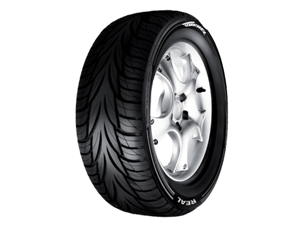

COMO CAMBIAR UNA LLANTA
PASOS PARA PRINCIPIANTE EN APUROS!!!
- Estacionate en un lugar segur
- Saca y prepara todas las herramientas necesarias para realizar el cambio
- afloja los birlos
- levanta el auto colocando el gato hidrahulico colocandolo debajo el chasis
- Retira los birlos
- inserta la llanta de refaccion
- Baja el vehiculo
VIDEO PARA REFORZAR LOS PASOS
LLANTAS ULTIMO MODELO Y TECNOLOGIA ALEMANA

COMPRA TU LLANATA AQUI